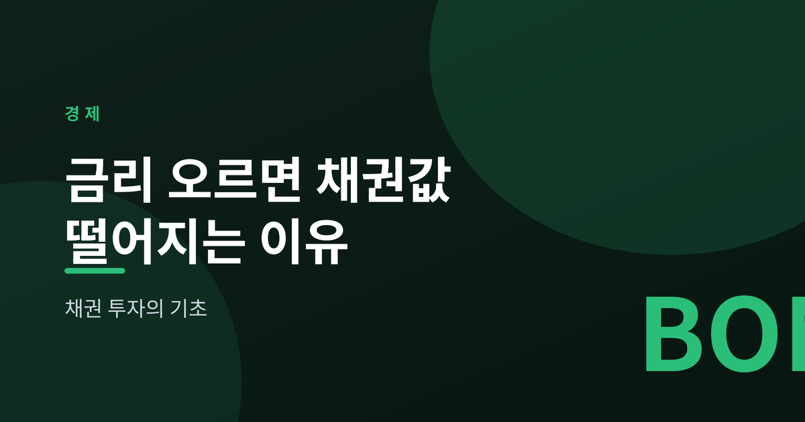
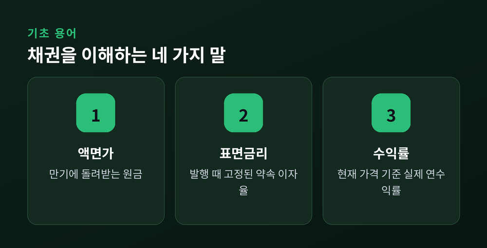
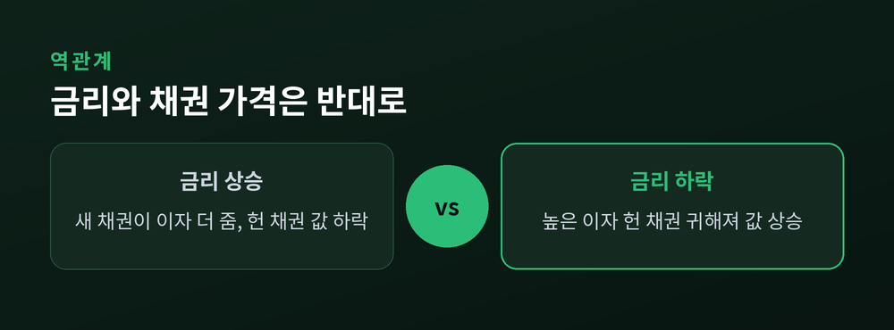
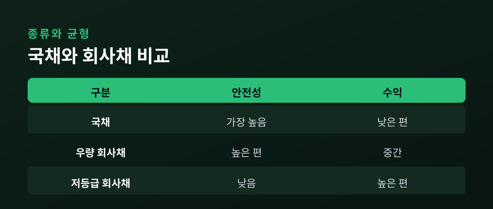

금리가 오르면 채권값이 떨어지는 이유

이번 글에서는 채권 투자의 기초를 정리해 보겠습니다. 특히 초보자가 가장 헷갈려 하는 질문, "왜 금리가 오르면 채권값은 떨어지는가"를 쉬운 비유로 풀어보려 합니다. 개념부터 위험까지 차분히 짚어보겠습니다.
채권은 정부나 기업이 돈을 빌리면서 써주는 차용증입니다. 투자자는 돈을 빌려주고, 정해진 이자를 받다가 만기에 원금을 돌려받습니다.
여기서 네 가지 용어만 알면 절반은 끝납니다.
액면가는 만기에 돌려받는 원금입니다. 표면금리는 액면가에 대해 해마다 주기로 약속한 이자율입니다. 만기는 원금을 돌려받는 날입니다. 그리고 수익률은 지금 이 채권을 사서 만기까지 들고 있을 때 실제로 손에 쥐는 연수익률을 뜻합니다.
표면금리는 발행할 때 고정됩니다. 하지만 수익률은 시장에서 사고파는 가격에 따라 계속 움직입니다.

핵심은 하나입니다. 이미 발행된 채권의 이자는 고정되어 있다는 점입니다.
간단한 비유를 들어보겠습니다. 지금 연 3% 이자를 주는 채권을 100만 원에 샀습니다. 그런데 시장 금리가 올라 새로 나온 채권은 연 5%를 줍니다.
이제 아무도 3%짜리 헌 채권을 100만 원에 사지 않습니다. 같은 값이면 5%짜리 새 채권을 사면 되니까요.
그래서 헌 채권을 팔려면 값을 깎아야 합니다. 가격을 낮춰 3% 이자의 매력을 5%에 맞춰줘야 팔립니다. 이렇게 금리가 오르면 기존 채권의 값은 떨어집니다.
반대도 성립합니다. 금리가 내리면 예전에 산 높은 이자의 채권이 귀해져 값이 오릅니다. 채권 가격과 금리는 시소처럼 반대로 움직입니다.

같은 폭으로 금리가 올라도 채권마다 흔들리는 정도는 다릅니다. 그 민감도를 재는 잣대가 듀레이션입니다.
대략 이렇게 이해하면 충분합니다. 듀레이션이 길수록 금리 변화에 크게 출렁입니다. 만기가 먼 채권일수록 듀레이션이 길어집니다.
그래서 금리가 오를 것 같으면 만기가 짧은 채권이 상대적으로 안전합니다. 금리가 내릴 것 같으면 만기가 긴 채권이 더 큰 이익을 안겨줍니다.
물론 미래 금리를 정확히 맞히는 사람은 없습니다. 그래서 만기를 여러 개로 나눠 담는 방법도 흔히 쓰입니다.

채권은 발행 주체에 따라 나뉩니다. 국채는 정부가 발행해 가장 안전합니다. 회사채는 기업이 발행하며, 신용등급이 낮을수록 이자는 높지만 떼일 위험도 커집니다.
위험은 크게 세 가지입니다.
금리위험은 앞서 본 그대로, 금리가 오르면 값이 떨어지는 위험입니다. 신용위험은 발행처가 이자나 원금을 갚지 못할 위험입니다. 유동성위험은 팔고 싶을 때 제값에 팔기 어려운 위험입니다.
개인이 채권에 접근하는 길은 크게 둘입니다. 하나는 개별 채권을 직접 사는 방법이고, 다른 하나는 여러 채권을 묶은 채권형 ETF를 사는 방법입니다. ETF는 소액으로 분산이 되지만, 정해진 만기가 없어 원금 보장 개념과는 다릅니다.
이 글은 특정 상품에 대한 투자 권유가 아니며, 투자 판단과 그 책임은 본인에게 있습니다.
정리하면 이렇습니다. 채권의 이자는 고정이고 시장 금리는 움직입니다. 그 어긋남이 가격을 밀고 당깁니다.
— "금리가 오르면 채권값이 떨어진다"는 말은, 결국 고정된 약속과 변하는 세상 사이의 거리입니다.
숫자가 어렵게 느껴지신다면, 이 시소 하나만 기억해 두시길 권합니다.